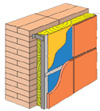

| Наименование изделия |
Образцы применения |
Рекомендуемая область применения |
| ИЗОМИН ЛАЙТ |
|
В качестве ненагруженной тепло-звукоизоляции горизонтальных, вертикальных и наклонных строительных ограждающих конструкций всех типов зданий, в том числе малоэтажного и коттеджного типа индивидуальной застройки. |
| ИЗОМИН КАВИТИ |
|
В качестве ненагруженной тепло-звукоизоляции горизонтальных, вертикальных и наклонных строительных ограждающих конструкций всех типов зданий, в том числе для устройства полов, потолков, внутренних перегородок. В качестве утеплителя в легких ограждающих конструкциях каркасного типа. В качестве среднего теплоизоляционного слоя в трехслойных облегченных стенах малоэтажных зданий из кирпича, керамзитобетонных, газобетонных и других блоков. |
| ИЗОМИН ВЕНТИ |
 |
С внешней стороны всех типов зданий в качестве тепло-звукоизоляционного слоя при устройстве фасадных конструкций с вентилируемым зазором. |
| ИЗОМИН ФАСАД |
|
С внешней стороны всех типов зданий в качестве тепло-звукоизолязионного слоя с последующим оштукатуриванием или нанесением защитно-покровного слоя. |
| ИЗОМИН РУФ-Н |
|
В качестве нижнего тепло-звукоизоляционного слоя в многослойных покрытиях плоских кровель, в том числе при укладке на поверхность без устройства цементной стяжки. Плиты Изомин РУФ-Н рекомендуется применять в комбинации с плитами Изомин РУФ-В. |
| ИЗОМИН РУФ |
|
В качестве тепло-звукоизоляционного слоя в покрытиях плоских кровель, в том числе при укладке на поверхность без устройства цементной стяжки. |
| ИЗОМИН РУФ-В |
|
В качестве верхнего тепло-звукоизоляционного слоя в многослойных покрытиях плоских кровель, в том числе при укладке на поверхность без устройства цементной стяжки. Плиты Изомин РУФ-В рекомендуется применять в комбинации с плитами Изомин РУФ-Н. |
| ИЗОМИН СС |
|
В качестве среднего слоя (сердечника) при изготовлении строительных трехслойных стеновых панелей. |
| ИЗОМИН СК |
В качестве среднего слоя (сердечника) при изготовлении строительных трехслойных кровельных панелей. |